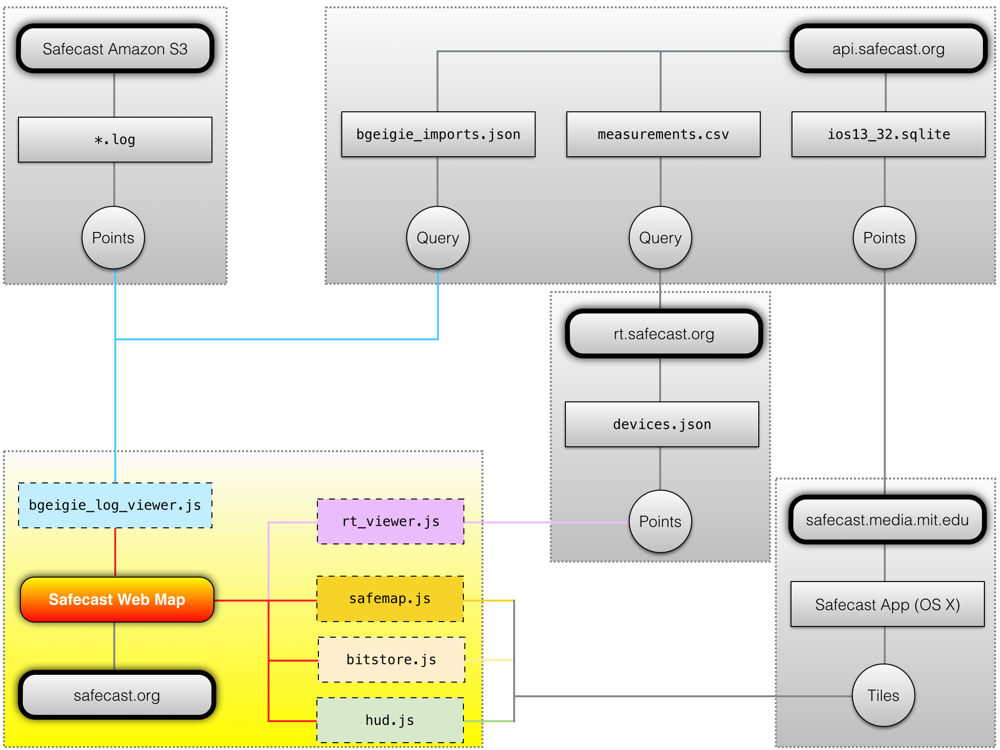
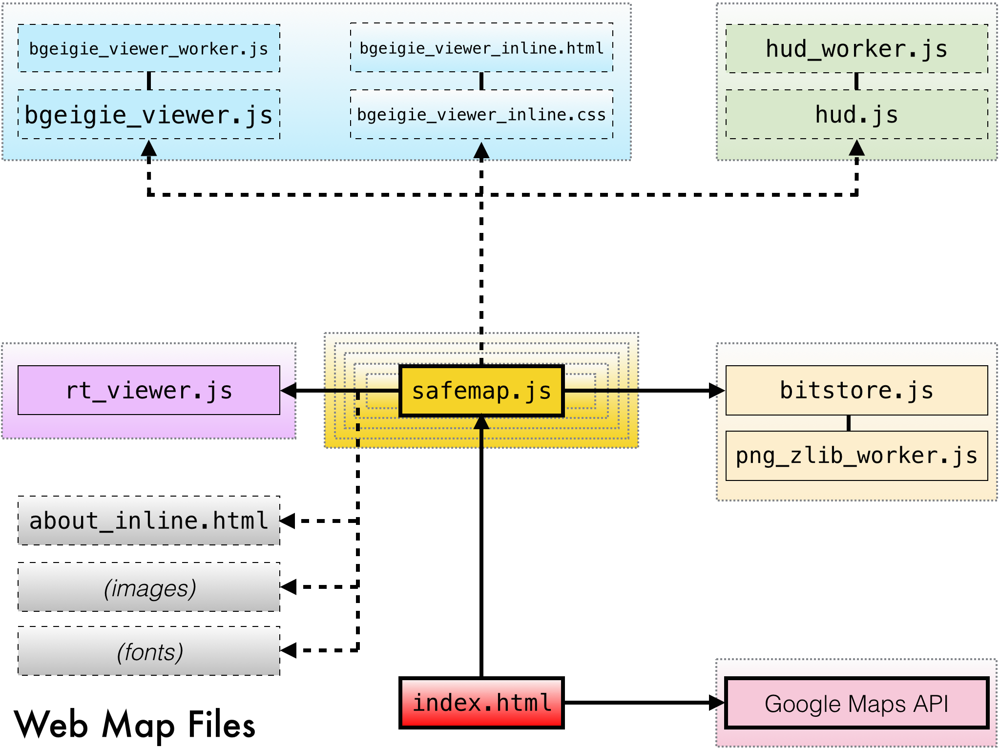

|

|

|
|
Web Map Data Flow
|
Web Map File Structure
|
Introduction
First, the process for creating tiles from the Safecast dataset will be discussed.
This process begins on the Safecast API server with SQL, and ends on a server running OS X with C.
This is not the sole visualization of the Safecast dataset, but is the primary one.
Currently, the Safecast native apps for iOS and OS X share the same underlying engine for tile rendering. The native apps are dynamic; the web map is the result of the OS X app producing static PNG tiles.
Here's how it happens.
Measurements: Filtering and Conversion
-
The data is filtered using a combination of sanity filters and manually-maintained blacklists for specific exceptions.
- This filtered version of the dataset may be downloaded here.
-
CPM is converted to µSv/h on a per-device basis.
- For bGeigies, the conversion is CPM/350.0
- In the above dataset, bGeigies have a NULL device_id
- Because they are not stored in the database, the conversion factor constants are hardcoded into the SQL script. Source available here.
-
The data is reprojected from EPSG:4326 decimal degree latitude / longitude to EPSG:3857 Web Mercator pixel x/y at zoom level 13, which is ~19m resolution.
- The algorithms for reprojection can be found here.
Measurements: Aggregation (Binning)
-
From the above, the distinct spatial x, y locations at zoom level 13 are selected, as well as the most recent date for each of them, on a per-point basis.
- This most recent date can range from 2011 to the present, depending on the specific location.
-
The distinct spatial x, y locations at zoom level 13 are then set to the mean for that location.
- However, only the most recent 270 days for that point are selected.
- Thus, if a point contains data from 2014, no data from 2011 will be included in the mean.
- The purpose of this is to simultaneously show the most recent measurements if available, while not discarding all older data, due to the temporal resolution of the dataset.
- In general, most of the older measurements are background level.
Measurements: Export
-
These points as described above are now the final XYZ points used for both the web map and iOS / OS X apps.
- Dose rate ("Z") is converted to nSv/h so it can be stored as an integer, and exported from PostgreSQL to a SQLite3 database.
- The Z column is then offset by -32768 to be stored more compactly with a smaller file size.
- This database is available here.
-
All of the above actions -- filtering, conversion, aggregation, and export, are performed on the server by an SQL script.
-
Source available here.
- Note: if you plan to use the SQL script directly, the schema references may require changes to work in your environment.
Safecast App: Data Update
-
The above SQLite database is downloaded and processed by the data update of the iOS or OS X apps.
- The points are read, the Z column is offset by +32768 to restore nSv/h, then converted back to µSv/h.
- The XYZ points are rasterized and tiled at zoom level 13, and stored in a SQLite3 database.
- The tile rasters are IEEE754 Binary16 half-precision floating point planar data in LSB byte order, compressed with either LZ4 or Deflate level 9.
-
Tiles for zoom levels 0 - 12 are created iteratively by using the mean of the next raster tile pyramid zoom level.
- Only cells with data values are included in the mean.
-
(Note: it is planned to move this process to the server, such that the client only needs to download the final tile database at some point in the future)
Safecast App: PNG Export
-
PNGs are then created from the tiles.
- The default options from the app are used for non-retina displays (Smart Resize 2x2, Shadow Halo 3x3, LUT min 0.03, LUT max 65.535, LOG10 scaling, Cyan Halo LUT) with the exception of discretizing the LUT to 64 colors.
- Discretization is done to improve the compression of the PNG output, through both improved Deflate ratios and ensuring the PNG can use indexed color.
-
PNGs for zoom levels 14 - 17 are then created by interpolating zoom level 13 data.
- Data values are interpolated using a specialized form of hybrid bilinear/Lanczos interpolation.
- Bilinear is used for the data values because it will not contain overshoot / undershoot errors as Lanczos does.
- First, the data values are edge-extended, and have a NODATA fill applied, which is a neighborhood mean with a kernel size equal to the extent of the resampling kernel in pixels minus one.
- This is then interpolated using bilinear interpolation.
- At the same time, the original data is converted to a bitmask, which is then edge extended and resampled using Lanczos 3x3 interpolation.
- The floating point output of the bitmask is thresholded and used to mask the results of the bilinear output, which becomes the final resampled raster output.
- The reason for this complexity is that GIS rasters with NODATA cells cannot be interpolated with simple naive resampling methods.
- Lanczos is used for the mask resampling instead of nearest-neighbor to provide a smoother clipping mask.
-
The PNG export for the web map is complete at that point.
Web Map: Interpolated Tiles and Indexing
-
Next, the interpolated data on the web map is generated outside of the app by Python scripts.
- Source available here.
- This creates the base interpolated tiles at zoom level 13.
-
Interpolated tiles for zoom levels 0 - 12 and 14 - 15 are then created by resampling the zoom level 13 PNGs, using Retile.
-
At this point the web map data is fully generated.
- Bitstore.js provides client-side indexing and updates the date displayed in the UI.
- Source available here.
Web Map: bGeigie Log Viewer
-
The bGeigie Log Viewer is an entirely client-side component written in JavaScript to display a large number of log files.
-
At a high level, it performs the following actions:
- The Safecast API for logs is queried based upon user input, via a RESTful HTTP POST request.
- A response is received in JSON, indicating the download URLs for the log(s).
- The log files are downloaded, parsed, and processed.
- Markers with icons encoding the dose rate of each point are created and displayed using the Google Maps API.
-
The true complexity comes from the scaling and performance required to display a large number of markers (point geometry) on the client.
- A local client-server model is used, where only markers in the current visible extent are displayed.
- Data processing is multithreaded via web workers.
- The marker data is stored in typed arrays, not objects, because the main issue affecting scalability is memory pressure. Even on a desktop browser, there a soft limit of about 1GB of RAM.
- The visibility of the markers is controlled, so as to not wastefully display markers on top of each other.
- When parsing the data, spatial coordinates are stored as zoom level 21 EPSG:3857 pixel x/y.
- A minimum zoom level is determined iteratively for every point in the log file.
- This produces a potentially visible set of point geometry which is guaranteed to not render occluded features.
- Not rendering occuluded points which cannot be seen improves performance, memory use, and scalability significantly.
- When multiple logs are displayed, a similar process is applied to remove occluded point geometry, as the datsets are merged.
- However, this merging process is imperfect, due to both multithreaded processing and the algorithm currently employed not scaling well past ~300k points.
- Thus, run-time filtering is also employed, which is necessary anyway due to markers already present when the map is zoomed or panned.
- The data is also clustered (grouped) by tile recursively using QuadKeys.
- This allows rendering aligned with Google Maps internally (which renders markers to 256x256 HTML Canvas tiles) and improves the performance of testing for occuluded geometry at runtime.
- Source available here.
Web Map: Query Reticle
-
The query reticle displays the numeric value for a cell in a raster layer, using again, entirely client-side processing in JavaScript.
-
The following actions are performed:
- The centroid of the visible extent, and tile(s) it represents, are determined.
- The PNG tile is retrieved from the server, and dispatched to a background web worker for processing.
- The color of the pixel nearest to the center of the reticle is determined, within a small search radius.
- This determination is made by reversing the steps used to color it mathematically.
- From this, an approximate median value, and range of that classification color, are determined.
- If the color was not present (due to rounding) a nearest-color match with a small tolerance is performed.
- If the search is successful, the color is learned for future use. Failures are also learned.
- If no match could be made, any other raster layers are queried successively.
- Otherwise, the results are displayed to the user.
-
The query reticle also optionally interfaces with bitstore.js, to prevent wastefully attempting to load tiles which do not exist.
- It will also learn "bad" URLs, such that they are only queried once.
- This method is not ideal as the color matches a range, rather than a specific value.
- Nonetheless, in absence of a GIS server, it produces results with acceptable precision that is noted in the display.
- Also, it is hoped the reader is rightfully terrified of any technology with a targeting reticle that learns from its failures.
- Source available here.